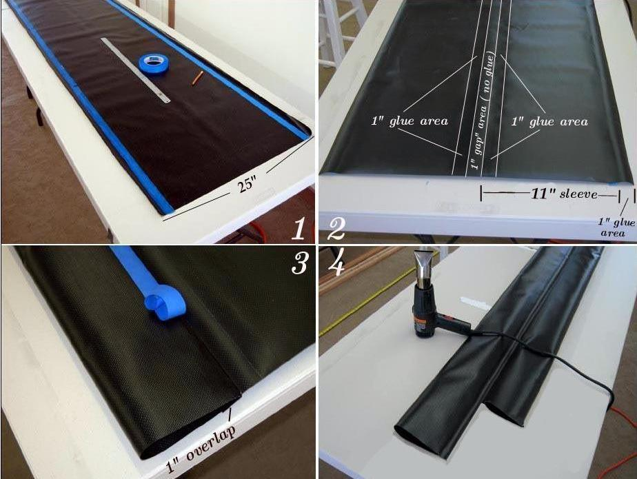

| Sonnet ( Sleeves) | Menu Previous Page Next Page |
|

1. Mask off 1" (25.4mm) on each side of the sleeve . This is the glue area on the underside of the sleeve that will overlap 1" past the 10.75" (273mm) circumference area. Apply 2 coats of vinyl cement.
2. Turn the sleeve over and mark a one inch area along the length of the sleeve center. This is the "gap" for the stringer and it is not to be glued. Not shown is the 1" wide masking tape used to define this area. Next, Apply 2 coats of vinyl cement to the 2ea X 1" (25.4mm) wide areas along the entire length of the sleeve"next" to the center gap area. These represent the "overlap" seams that will be glued to the glue seams in pic 1. 3. Fold under the two 1" areas that are to be glued and place tape along the fold. This will make it easier to keep the lines straight when gluing. 4. Starting at the center, work to each end of the sleeve while heat activating the glue with a heat gun and applying pressure to the seams. Do this on both sides of the spnson sleeve. Turn the sleeve over and repeat the process on the other side. Remove all tape. |
|